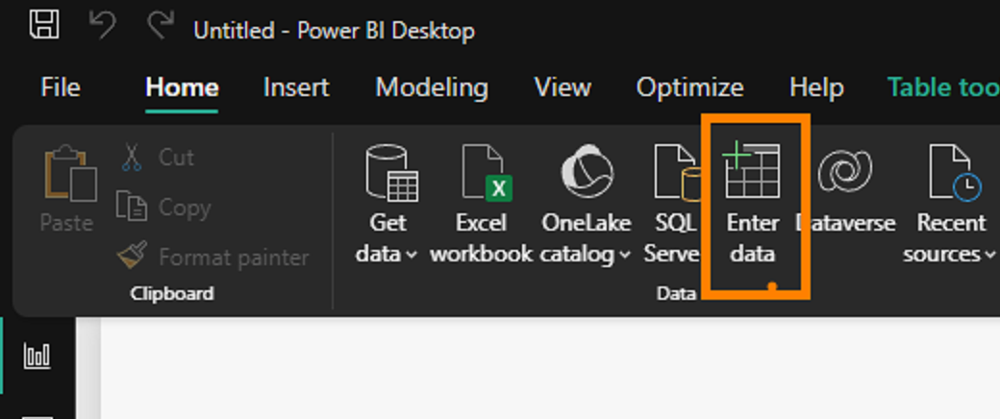
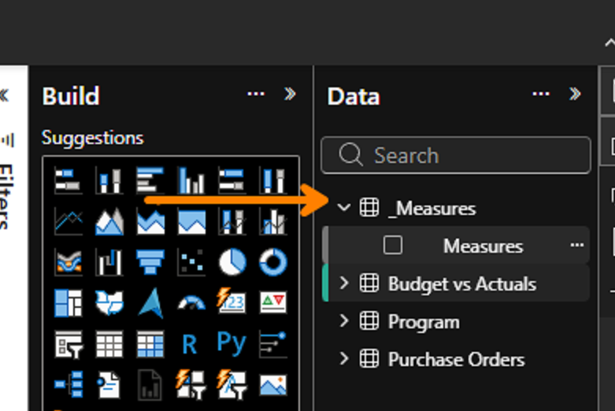
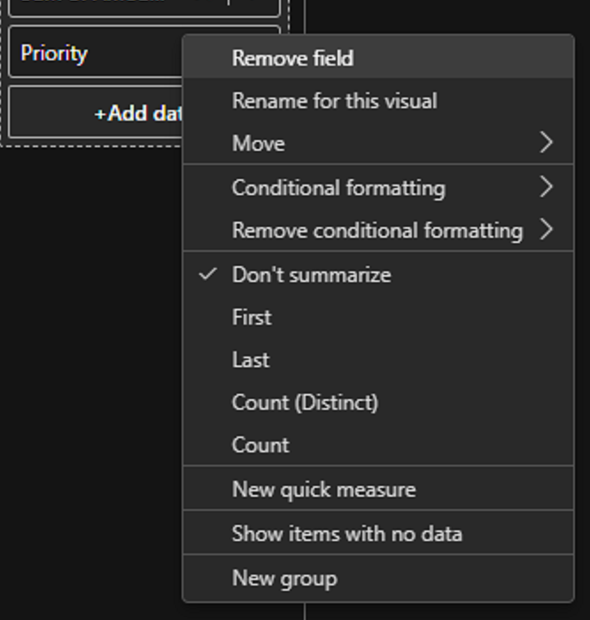
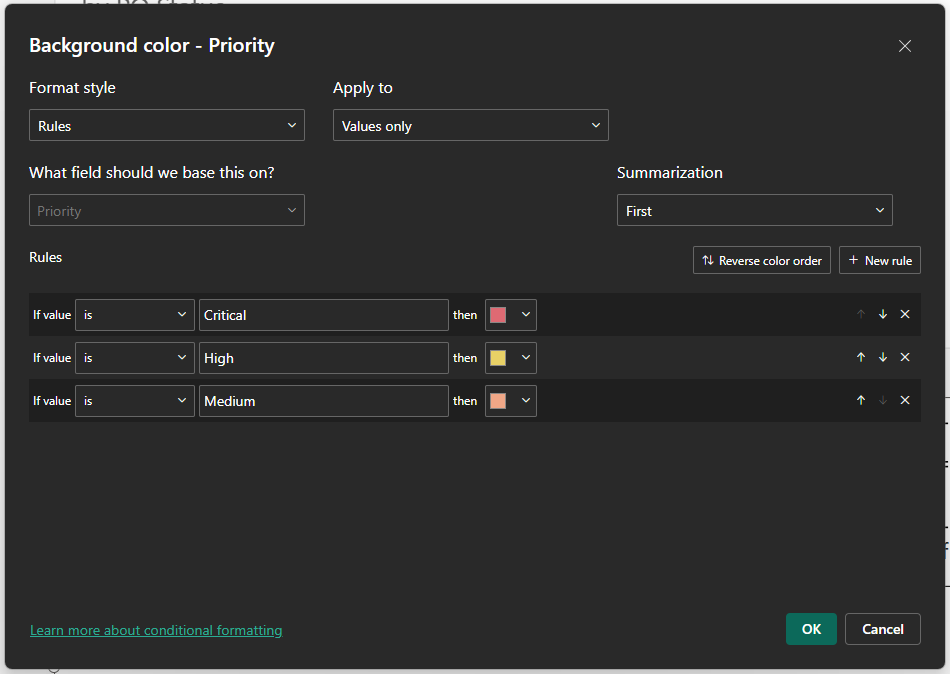

Create a measures table
- Select Home → Enter data.
- Name the table _Measures, name its single column Measures, enter one value of 1, and select Load.
- Hide the Measures column in Report view after you have created the measures.
- For each formula below, select New measure and set its Home table to _Measures.


Core measures
Total Budget = SUM('Budget vs Actuals'[Budgeted Amount])Total Actual = SUM('Budget vs Actuals'[Actual Amount])Budget Variance = [Total Budget] - [Total Actual]
Budget Variance % = DIVIDE([Budget Variance], [Total Budget])
Total PO Value = SUM('Purchase Orders'[PO Amount])Outstanding PO = SUM('Purchase Orders'[Amount Remaining])PO Count = DISTINCTCOUNT('Purchase Orders'[PO ID])Format money measures as Currency with 0 decimal places. Format Budget Variance % as Percentage with 1 decimal place.
Match the completed-report presentation
- Set each page to a custom 1920 × 1080 canvas (16:9).
- Add a clear page heading: Financial Health, Procurement Exposure, or Executive Review.
- Use a light neutral canvas, white visual surfaces, subtle gray borders, and a restrained navy/teal finance palette.
- Use explicit chart and table titles that state the decision being supported.
- Keep 24–32 px gaps between visuals and align edges across each row.
- On Executive Review, add two Page navigation buttons targeting Financial Health and Procurement Exposure. Keep both controls in the top-right header band.
Page layout pattern
Budget
Actual
Variance
Variance %
Fiscal year
Keep the reading order consistent: headline KPIs, primary comparison, filters, then detail.
Build three focused pages
Page 1 · Financial Health
Question: Which programs and periods are driving the budget gap?
Apply conditional formatting to Budget Variance: negative values need attention. Show data labels in millions.
Page 2 · Procurement Exposure
Question: Which vendors and orders hold the largest unpaid commitments?
Conditionally format Priority and Amount Remaining. Keep the numeric value visible so color is not the only signal.
Page 3 · Executive Review
Question: What requires leadership attention now?
Keep this page sparse enough to scan during a meeting and place navigation consistently in its header.
Apply conditional background formatting
On the Procurement Exposure table, use color to make Priority easier to scan while keeping the text visible.
- Select the table visual.
- In the Build pane, open the menu beside Priority.
- Select Conditional formatting → Background color.
- Set Format style to Rules, Apply to to Values only, and base the rules on Priority summarized by First.
- Add text rules for Critical (red), High (yellow), Medium (peach), and Low (green).
- Select OK, then confirm every row still shows its Priority text over the background color.


Configure interactions
- Select a chart, then Format → Edit interactions.
- Let Program and Branch selections filter all relevant visuals.
- Use highlight only when the retained total provides useful context.
- Keep cards filtered; leadership should see that a slicer changed the scope.
- Test one program selection on every page, then clear all filters.
Accessibility and finish
- Use descriptive titles such as “Outstanding PO value by vendor,” not “Bar chart.”
- Add alt text under Format → General → Properties for each meaningful visual.
- Do not communicate status through color alone; retain labels and values.
- Use consistent currency display units and decimal precision.
- Align visuals and keep page navigation in the same location.
Validate the unfiltered report
The budget variance should be -$30.48M, approximately -13.0%. A mismatch usually indicates incorrect percentage/currency conversion, an unremoved duplicate, or a filter that remains selected.
Final test
- Select one Program Name and confirm both budget and procurement visuals filter.
- Select FY2026 and confirm the procurement page does not change unless a date relationship/filter was intentionally added.
- Clear all filters and compare the totals above.
- Save the PBIX, close it, reopen it, and select Refresh.